水生昆蟲
―― 龍蝨類 ――
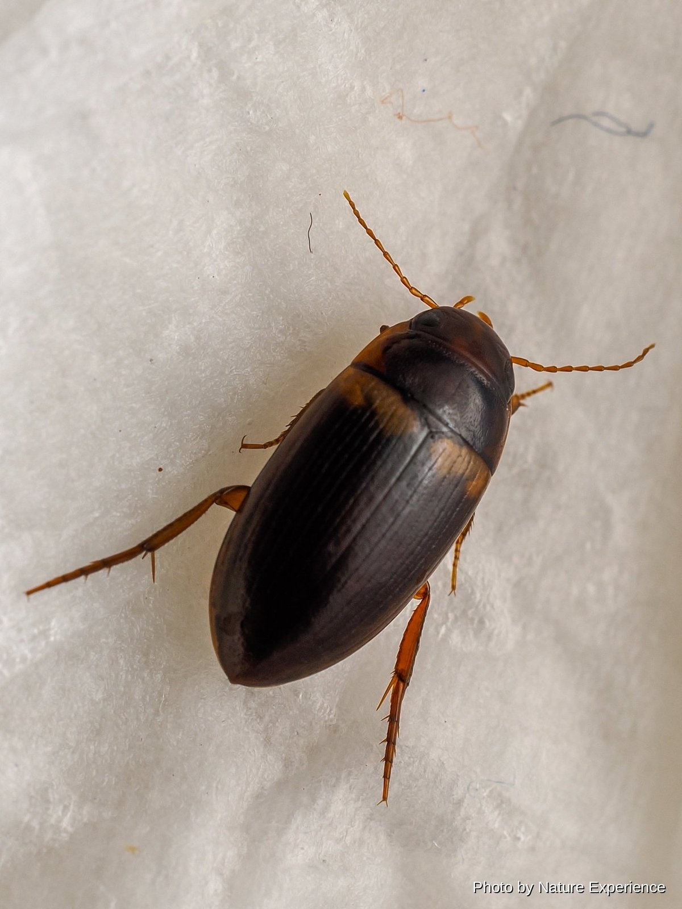
體長約5.3〜5.5毫米的小型龍蝨。分布於日本、朝鮮半島和中國，但產地較為局限，已被佐賀縣、秋田縣等地的紅色名錄列為易危。長期以來被歸入背線龍蝨屬(*Copelatus*)，但2026年發表的論文根據DNA分析和形態比較，將其移入以澳洲區為分布中心的 *Austrelatus* 屬。在奄美大島於2018年首次被記錄。同一論文還將南大東島和宮古島的種群描述為不同的亞種。它也棲息在雨後形成的水窪等很快就會乾涸的小水體中。從卵到成蟲只需39〜61天，一般認為這使它即使在這種不穩定的水域中也能完成一生。
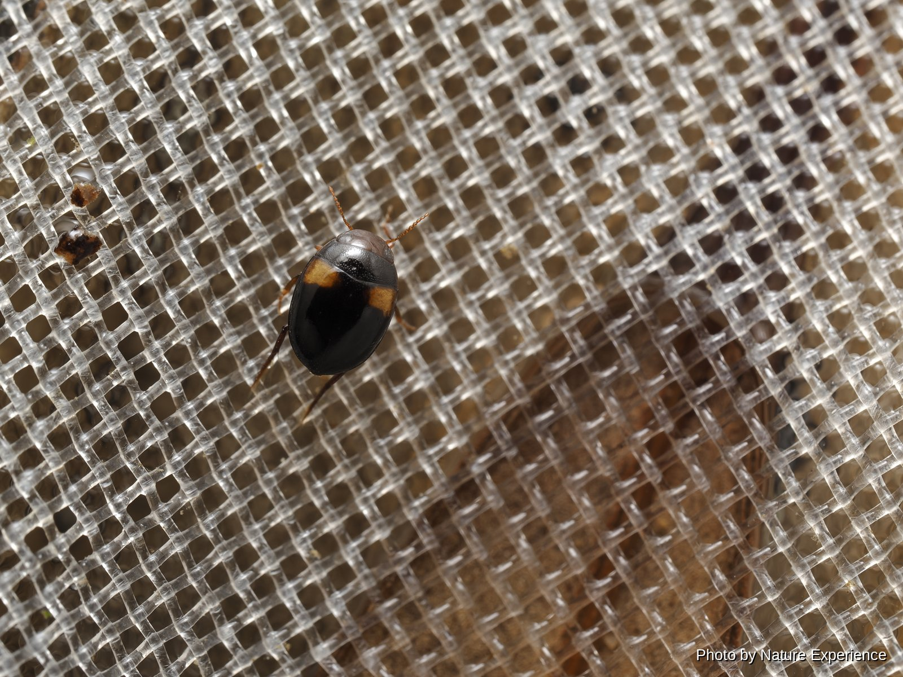
正如種小名(意為"二紋的")所示，鞘翅上據稱有兩個斑紋的極小型龍蝨。據說與近緣種相比體型更小，且頭部表面的微網紋不完整，以此作為區分點。分布於吐噶喇群島、奄美群島至沖繩島一帶的南西諸島，在環境省昆蟲類紅色名錄中被列為近危(NT)。詳細生態及形態的一手資料很少。
環境省紅色名錄:近危(NT)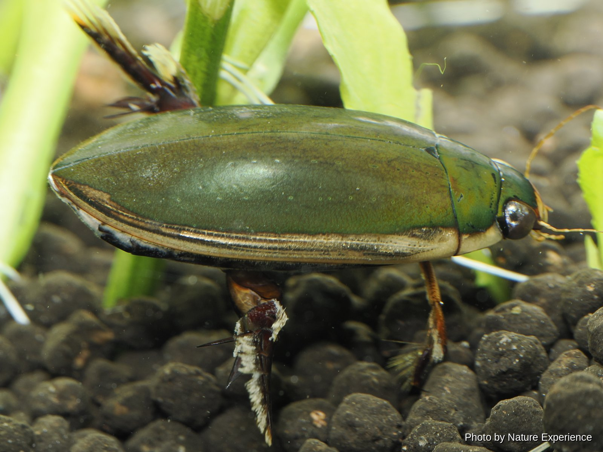
體長約24〜29毫米。分布於本州、四國、九州、南西諸島及小笠原諸島，國外見於中國、朝鮮 半島及台灣。體形呈長卵形、略扁平，背面光澤強烈，呈綠色至帶褐色的黑色，鞘翅邊緣有一圈 黃色鑲邊，是與褐色龍蝨區分的要點。棲息於水生植物豐富的池沼、濕地，以及水田及其周邊水 窪、休耕田、水流平緩的水渠。自1960年代以來，由於農藥使用及圃場整備，本州以南地區數 量急劇減少，已被列入環境省紅色名錄的易危(VU)等級，但在南西諸島仍相對常見。其體形和 色調與褐色龍蝨非常相似，僅憑照片很難區分。
環境省紅色名錄:易危(VU)
體長約11〜14毫米。分布於屋久島以南的南西諸島，國外見於台灣、中國及東南亞的南方型龍 蝨。棲息於水生植物豐富的池沼、水田等靜水域。除了棲息環境減少外，近年發現包括本種在內 的多種龍蝨因疑似以飼養為目的而被大量販賣，因此2023年1月與其他龍蝨一同被指定為特定第 二種國內稀有野生動植物種。該指定僅限制以販賣、分發為目的的捕獲及轉讓，以觀察為目的的 採集不在限制範圍內。與分布於本州以西的同屬近緣種十分相似，但由於分布範圍不同，比較容 易區分。
禁止以販賣、分發為目的的捕獲(特定第二種國內稀有野生動植物種)體長18〜25毫米。日本國內分布於南西諸島(中之島以南)及大東諸島，國外分布於中國、台 灣、東南亞及南亞。外形與黑龍蝨十分相似，但體形略呈細長卵形，背面呈有光澤的綠色至黑褐 色。在分布於南西諸島的近緣種中，被認為是數量相對穩定的一種。棲息於水生植物豐富的淺水 池塘及休耕水田。
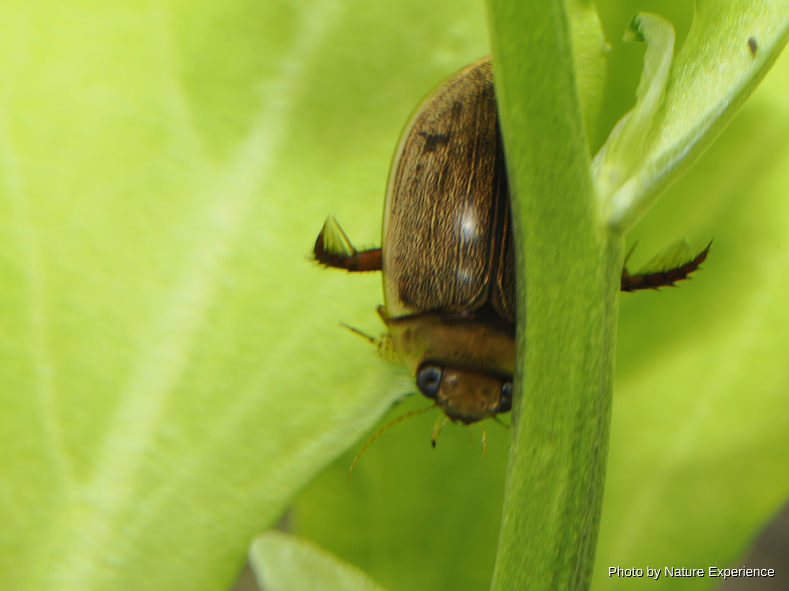
體長約10〜11毫米的小型龍蝨。鞘翅整體呈黃褐色，沒有明顯的條紋。分布於本州(關東地方以 西)、四國、九州、對馬、南西諸島及大東諸島，國外見於中國、台灣及東南亞。棲息於水田、池 沼等開闊的靜水域。在南西諸島的龍蝨中，與褐色龍蝨、小龍蝨一起，被認為是數量相對穩定的 種類。
―― 長角泥甲類 ――
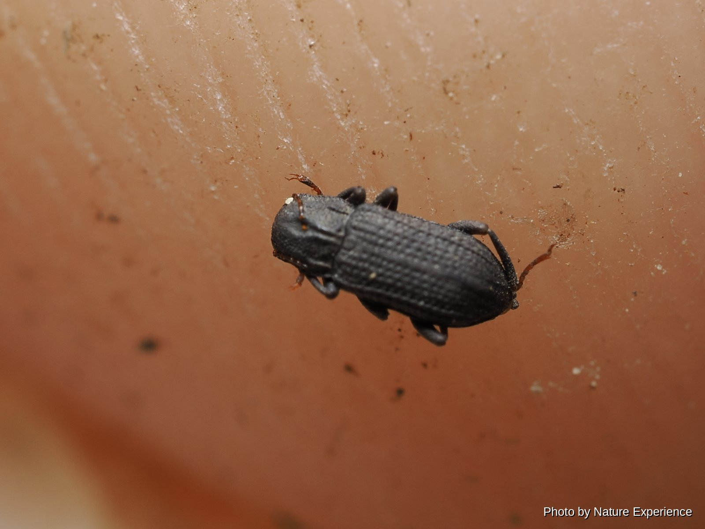
分布於奄美群島、沖繩諸島及關島的小型水生甲蟲。長角泥甲科主要棲息於清澈溪流，幼蟲和成 蟲都在水中生活，體長最大約5毫米，也因此作為清澈河流的指標而受到關注。本種自身的詳細 生態目前仍有許多未解之謎。

僅分布於奄美大島的特有種，2005年被記載。同屬(寬體泥甲屬)還包括分布於本州、四國、九 州的寬體泥甲及其近緣小型種，以及分布於大隅群島的另一特有種。長角泥甲科主要是棲息於清 澈溪流的小型水生甲蟲，但本種自身的詳細生態目前仍有許多未解之謎。
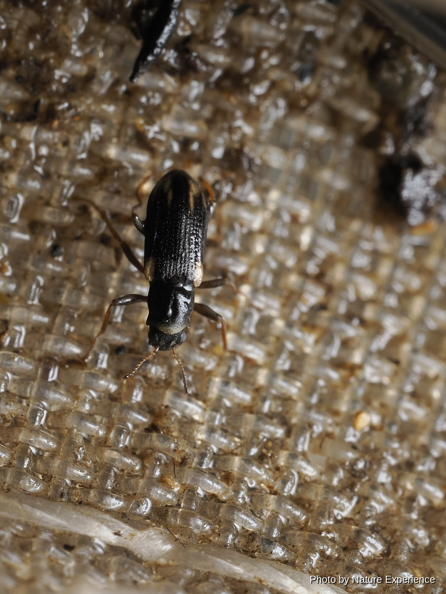
分布於奄美大島的小型水生甲蟲(指名亞種)。沖繩島、伊平屋島的種群被區分為獨立亞 種(沖繩溝泥甲，*O. a. okinawana*)，另有人為引入關島的種群。長角泥甲科主要棲息於清澈溪流，但本種自身的詳細生態目前仍有許多未解之 謎。

奄美大島特有種，2017年才被記載的新種。其形態與分布於日本本土及台灣的同屬其他種不 同，而交尾器的形狀等特徵與分布於中國南部的一個種非常相似，表明兩者關係密切。因此被視 為"遺存固有種"的一個例子：其祖先種被認為曾廣泛分布於歐亞大陸，奄美大島孤立後，其他地 區的近緣種群相繼滅絕，唯獨本種存活至今。長角泥甲科主要是棲息於清澈溪流的小型水生甲 蟲，但本種自身的詳細生態目前仍有許多未解之謎。

分布於奄美群島及沖繩諸島的小型水生甲蟲。澤泥甲屬在日本已知有8種，各種分布範圍從本州 到八重山諸島不等。長角泥甲科主要棲息於清澈溪流，但本種自身的詳細生態目前仍有許多未解 之謎。

分布於奄美群島及沖繩諸島的小型水生甲蟲。原本被視為獨立屬中的唯一種，但2021年的分子 系統學研究(Kobayashi et al., 2021)將其歸入長足溝泥甲屬。屬名(Nomuraelmis)及日文俗名由佐藤正孝博士於1964年命名，據信是為紀念同時代開拓日 本長角泥甲科研究的野村鎮博士而得名。本種自身的詳細生態目前仍有許多未解之謎。

為奄美大島、沖永良部島有記錄的小型水生甲蟲。過去曾被視為分布於本州以西近緣種的琉球列 島亞種，但2014年一項通過COI基因分析及形態比較的研究確認兩者之間存在種級水平的巨大 遺傳分歧，因而被提升為獨立種。目前已普遍認定其為獨立物種。扁泥甲科與長角泥甲科為近緣 類群，同樣棲息於清澈溪流。本種自身的詳細生態目前仍有許多未解之謎。
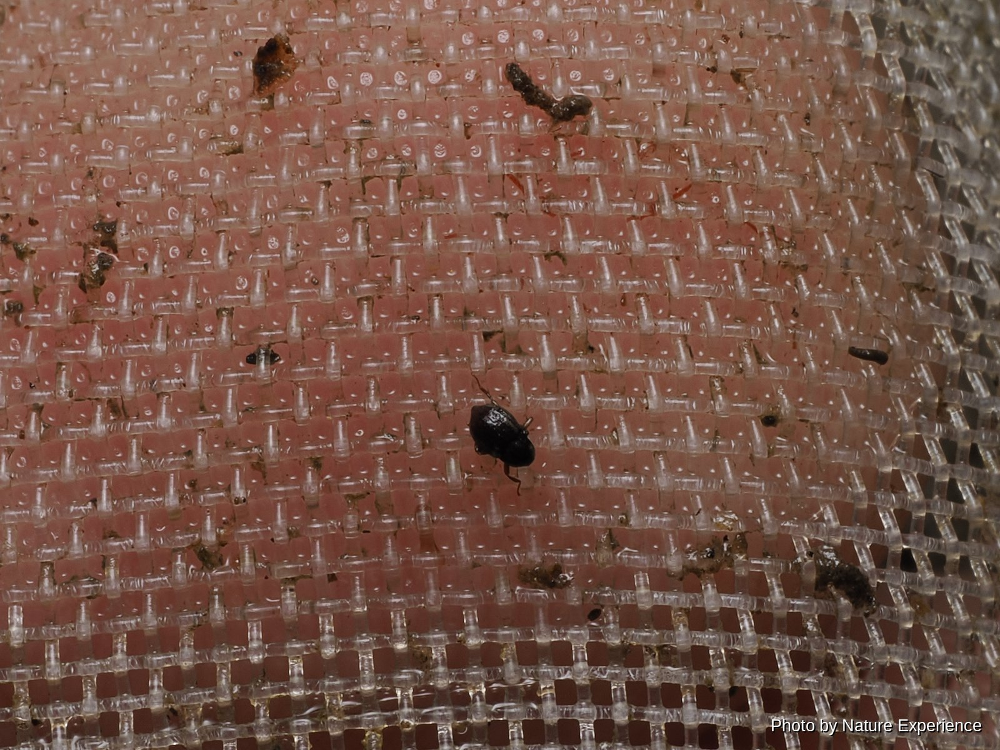
分布於奄美群島、沖繩諸島(沖繩島本身無記錄)的小型水生甲蟲，2007年被記載。華爪泥甲屬 在日本僅知2種，另一種分布於九州。本種自身的詳細生態目前仍有許多未解之謎。

分布於屋久島至奄美群島、沖繩諸島一帶的小型水生甲蟲(指名亞種)。光澤泥甲屬中，2020年 又從九州新記載了第二個種，使日本已知的本屬種類增至2種。吐噶喇列島口之島的種群被區分 為獨立亞種(*U. u. tokarana*)。本種自身的詳細生態目前仍有許多未解之謎。
―― 水黽類 ――

分布於奄美大島、德之島、沖繩島等南西諸島的小型寬肩蝽。近緣種游寬肩蝽偏好森林環繞的山谷池塘岸邊的礫石或岩盤地帶，已確認會以卵的形態在水面漂浮的植物碎片或岸邊礫石上越冬，但本種自身的具體生態仍不清楚。另外需要注意的是，環境省紅色名錄中被列為易危(VU)的是近緣種游寬肩蝽，與本種(奄美游寬肩蝽)是不同的物種，不應混淆；本種自身並未列入該紅色名錄。

體長約1.5〜2.1毫米的小型水生昆蟲。分布於本州(福島縣以西)、四國、九州，在南西諸島則 分布於喜界島至沖繩島一帶。常見於細流旁陰暗的水窪及岩石背陰處，捕食落在水面上的小型昆 蟲。
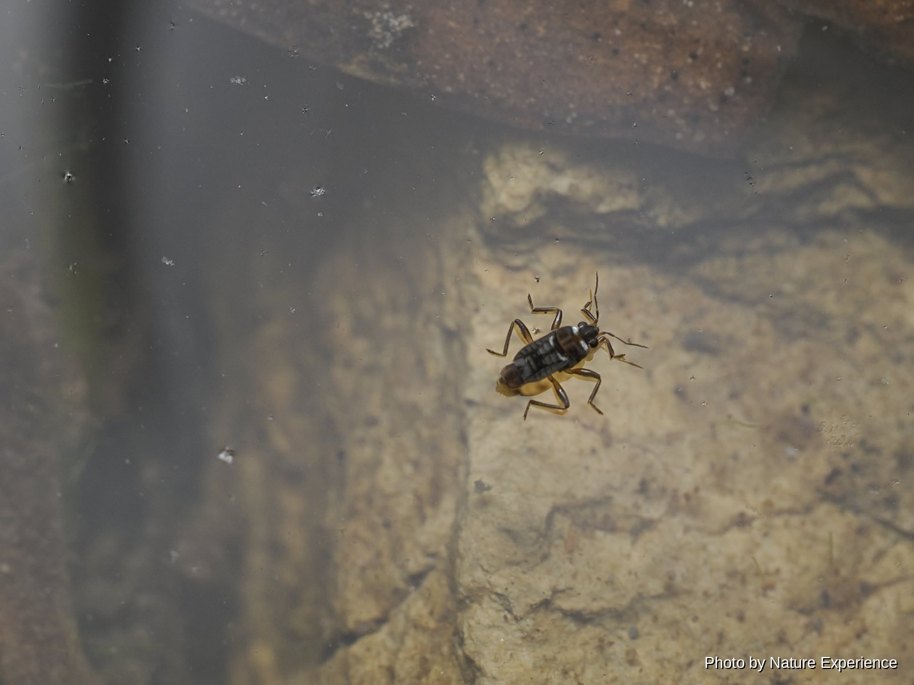
體長約1.7〜1.9毫米的小型水生昆蟲。分布於南西諸島(奄美群島至八重山諸島)及台灣。常見 於山間林道旁滲水形成的小水窪，學術研究曾報道其雄性長時間守護雌性的配偶行為。
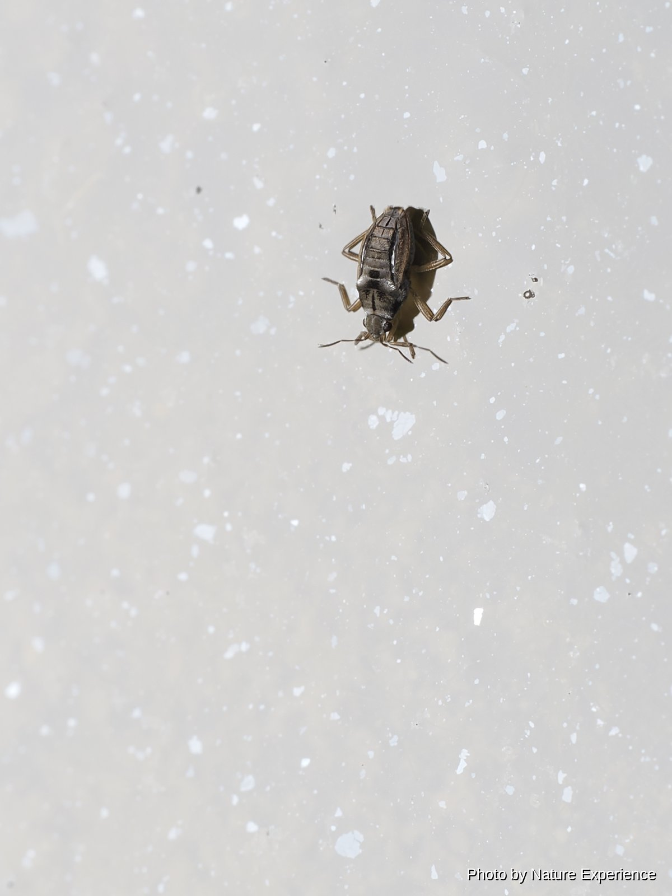
體長約1.5〜2毫米，是寬肩蝽科中體型最小的一類。分布於本州、四國、九州、對馬、南西諸 島及大東諸島(南大東島)，國外也廣泛分布於朝鮮半島、中國、東南亞、台灣乃至大洋洲。喜歡 棲息在小水田、細流等有水流的水邊，捕食落在水面上的小型昆蟲。寬肩蝽科中既有不能飛的無 翅型，也有能飛的長翅型。
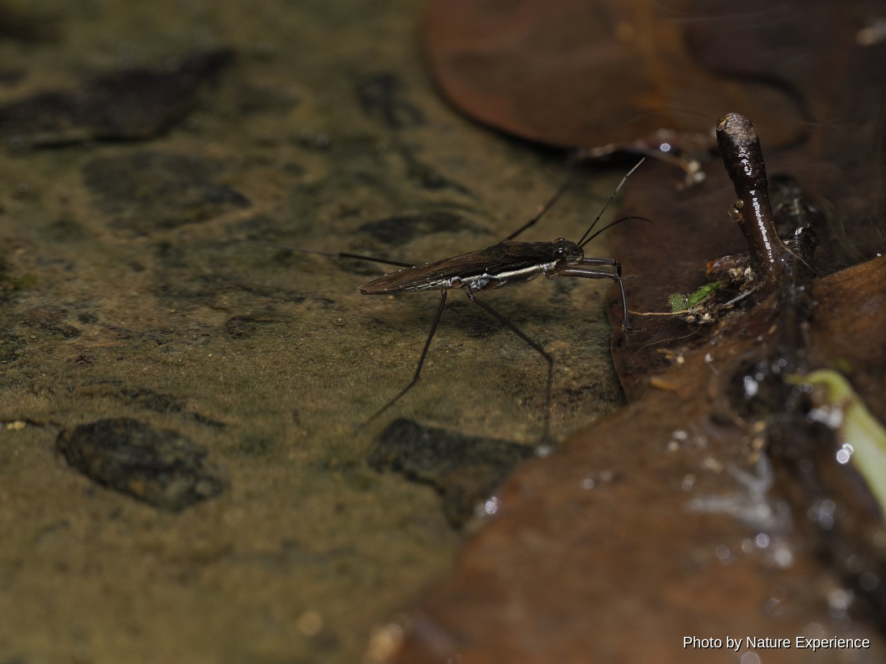
體長11〜16毫米左右，帶紅褐色的大型水黽。分布廣泛，從北海道經本州、四國、九州到南西諸島均有分布，偏好池沼、河流、濕地等水域，尤其喜歡水溫較低的地方。以成蟲形態在陸地上越冬，蘇醒後會飛往新的水域，因此早春時節常在小水窪中見到。

分布於南西諸島(寶島至沖繩島)。溪寬肩蝽屬在日本已知有數種，是棲息於河流及池塘岸邊的 類群。本種自身的詳細生態目前尚未獲得充分的資料確認。
―― 划蝽類 ――
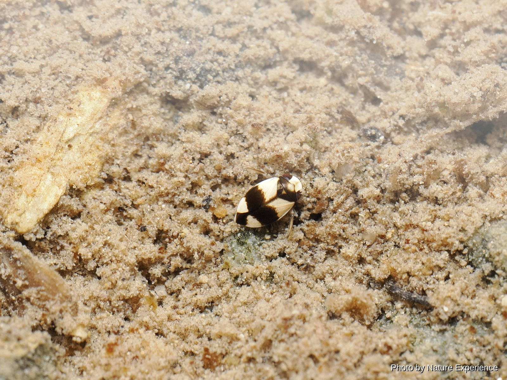
體長約1毫米的極小型水生蝽，日本固有種，分布於南西諸島(奄美大島、德之島)。同屬近緣種中，分布更廣的小划蝽(Micronecta guttata)遍布北海道至九州。平時潛伏在沙子或落葉下，受到驚擾時會迅速游走。

日本產蟾蝽科唯一的一種，體長約1厘米，體形寬扁。無單眼，前足粗壯呈鐮刀狀是其特徵。其日文名稱Ashibuto-memizumushi，字面意思是"粗腿水生蝽"，但儘管如此，它並不生活在池沼水中，而是一種半陸生的伏擊型捕食者，夜間活動於海岸沙灘(從水邊到海岸林之間)，捕食潮蟲和鼠婦，以成蟲形態越冬。分布範圍廣，從南九州經南西諸島一直到小笠原諸島，並非奄美大島的固有種。
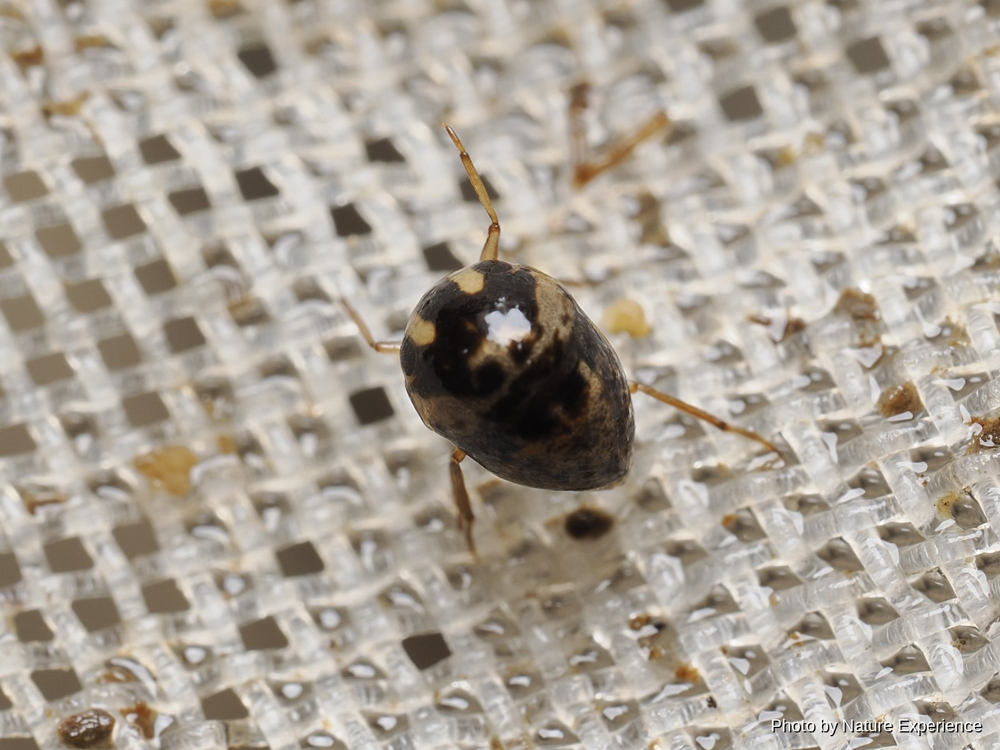
日本產該科唯一的一種，體長2.5〜3毫米左右，呈半球形的小型身體。與仰蝽一樣腹面朝上游泳。僅分布於奄美大島、德之島，為奄美群島固有種，棲息在水流平緩的河流中，陸地植物根系垂入水中的場所等處。在環境省昆蟲類紅色名錄中被列為易危(VU)。
環境省紅色名錄:易危(VU)―― 牙甲類 ――
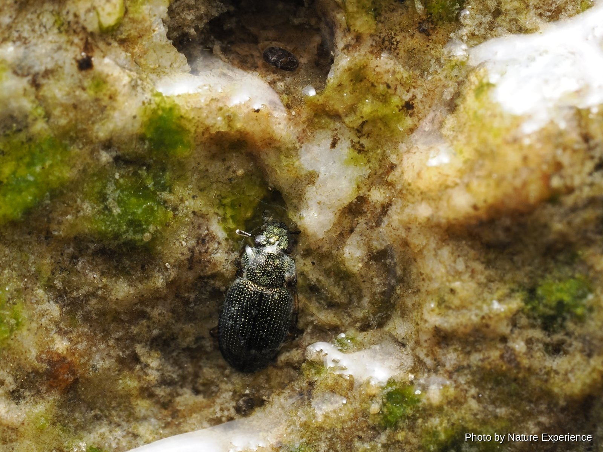
1997年春在奄美大島偶然採集到的個體為基礎記載的新種，是一種小型水生甲蟲。體長1.9〜2.3毫米。分布於奄美大島與沖繩島，棲息在山區溪流中較為開闊的地方，但個體數量並不多。河川開發與護岸工程導致的棲息環境惡化令人擔憂，在2010年環境省紅色名錄的修訂中被新列為近危(NT)。
環境省紅色名錄:近危(NT)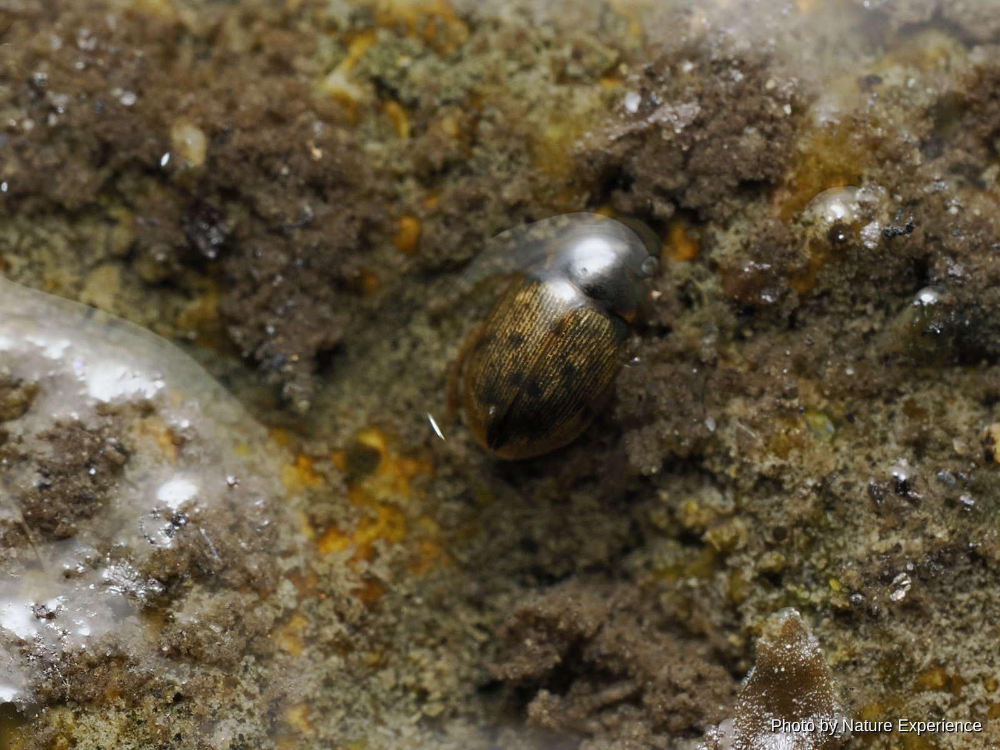
日本固有種小型牙甲科甲蟲，分布於奄美大島、德之島。日本產蜆牙甲屬中還有姬蜆牙甲、沖繩蜆牙甲等多個近緣種，區分時都需要觀察交配器。關於體長與生態的詳細記錄很少，仍有許多未知之處。